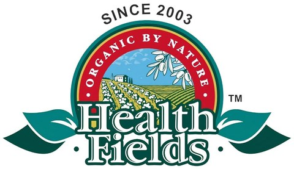
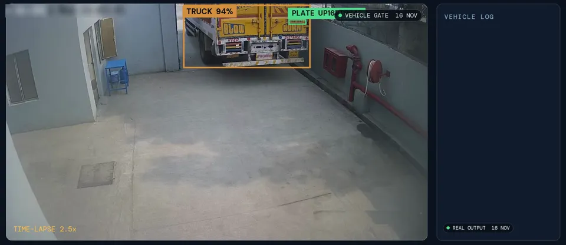

Healthfields counts cartons on the cameras it already had
Healthfields makes and sells organic staples, with more than 600 products. At its site in Greater Noida, VisorVolt counts what leaves on the existing CCTV cameras, and writes the counts into the warehouse system. It runs on one computer on site, with no internet needed.
The camera counted 141 cartons and a person counted 141, over 38 sampled windows on two days the system had never seen. 23 windows matched exactly; the range is about 7% either way.
On a day the model had never seen, the camera counted 102 cartons loaded at the dock and a person counting each carton counted 103.
The truck-arrival trigger caught every truck arrival in its test. It was trained from about 40 frames.
Held out means tested on days the models never saw. How we measured is below.
- Company
- Healthfields
- Industry
- Food manufacturing and distribution
- Site
- Greater Noida, India
- Cameras
- Existing CCTV cameras
- Runs on
- One computer on site, no internet needed
- Results go to
- Their warehouse system
The challenge
Stock moves through many doors. Goods arrive by truck, finished goods are packed into cartons, and dispatch loads them onto trucks. Counting by hand is slow, and every count has to agree with barcode scans and registers. Healthfields wanted counts it could trust, from the cameras it already owned, without sending its footage off site.
What we built
- Vehicle gate and truck triggers. A camera spots a truck at the bay and starts the count. Trained from about 40 frames.
- Dispatch counter. A detector built from 40 labelled images, with a tracker, counts each carton loaded at dispatch.
- Packing line counter. A running count of cartons at the end of the line.
- Into the warehouse system. Counts are written into the warehouse system. Mismatches go to review with the clip. Camera counts and barcode scans are compared every day.
One computer on site runs five services and four nightly reports, and keeps running with no internet.



How we measured
A person counts, without relying on the camera's answer, and we compare. For dispatch, the person counted each carton loaded on one truck. For the packing line, random windows were drawn from two days (18 and 19 November 2026) and counted by eye. The version under test was fixed before those days.
Earlier versions over-counted on random windows. Those results are why the version under test was changed before these days.
Progress log
The deployment is ongoing and changes every week. Newest first.
What we did Tested the packing line counter on two days it never saw: 141 counted by camera and 141 by a person over 38 sampled windows.
What’s next Keep measuring on new days and add more checkpoints at the site.
What we did Published this case study with the measurements so far.
What we did Tested the dispatch counter on a day it never saw.
What we measured 102 cartons counted by camera and 103 by a person counting each carton.
What we did Truck-arrival trigger went live at the unloading dock, and the packing counter started running at the sealer. A person counted every carton on one dispatch truck, so the carton counter could be tested on a day it never saw.
What’s next Measure each counter against a person’s count.